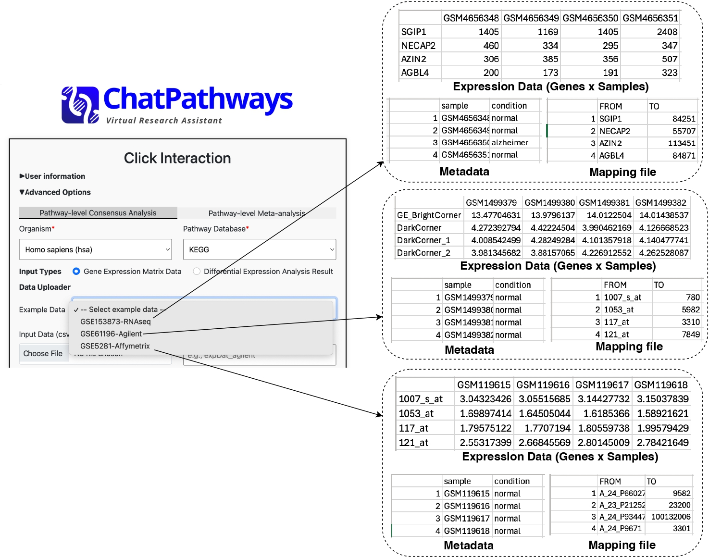
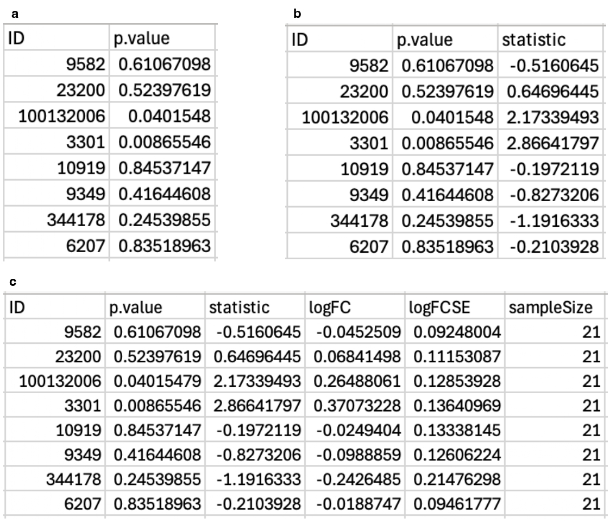

• The first module, Pathway-level Consensus Analysis, supports three input types:
(i) Expression matrix, (ii) Gene list, and (iii) Gene list with Fold change.
NOTE: Gene identifiers (IDs) in all input data types must be mapped to their corresponding unique Entrez Gene IDs before analysis.
If the provided data already uses Entrez Gene IDs, this note can be skipped. Otherwise, users have two options
for conversion: (i) select an ID mapping option available in PAG-Agent or (ii) upload a custom ID mapping file.
For Expression matrix, users must provide a gene expression matrix
together with sample phenotype metadata, with an optional mapping file (Figure 2).

Figure 2. Example bulk transcriptomics datasets with their corresponding metadata and optional mapping files. The three examples shown (from top to bottom) correspond to the Alzheimer's disease datasets: GSE153873, GSE61196, and GSE5281. The Expression data must be organized with gene identifiers (IDs) as rows and samples as columns. The metadata must contain two required columns,sample and
condition, which specify the sample identifiers and their associated experimental conditions.
The mapping file is optional and is used to convert probe IDs in the input data to their corresponding Entrez Gene
IDs. It must contain two columns, FROM (probe IDs) and TO (Entrez Gene IDs). To ensure
compatibility with PAG-Agent during data preprocessing and downstream analyses, the required column names in both the
metadata and mapping files must exactly match those shown in the figure (case-sensitive).

Figure 4. Examples of Gene list with Fold change input files accepted by PAG-Agent in two minimum formats: with or without thestatistic column. The ID column contains Entrez Gene IDs, whereas
p.value and statistic represent the p-values and test statistics generated by the selected
DEA method. Specifically, statistic corresponds to the t-statistic for limma, the
Wald statistic for DESeq2, and the likelihood ratio statistic for edgeR. Format (a) supports PA
using ORA only, whereas format (b) enables all supported pathway analysis methods, including
ORA, fGSEA, the KS test, and the Wilcoxon test. Format (c) is required for meta-analysis and includes
the additional columns logFC (log2 fold change), logFCSE (standard error of the
log2 fold change), and sampleSize (number of samples used in the DEA).
To ensure compatibility with PAG-Agent, the required column names in the input files must exactly match those shown in the
figure (case-sensitive).
The first module, Pathway-level Consensus Analysis, supports two input types:
(i) Expression matrix and (ii) Gene list.
For Expression matrix, users must provide a gene expression matrix
together with sample phenotype metadata, with an optional mapping file.
Users must also specify the following parameters:
Gene identifiers (IDs) in the input data must be mapped to their corresponding unique Entrez Gene IDs before analysis. If the provided data already uses Entrez Gene IDs, this step can be skipped. Otherwise, users have two options for conversion: (i) select an ID mapping option available in PAG-Agent or (ii) upload a custom ID mapping file (Figure 2). This selected input type expects PAG-Agent to assist users with data pre-processing on their raw input data, tailored to their chosen options, and supports a series of advanced analyses, including differential expression analysis (DEA), pathway analysis (PA), and pathway-level consensus analysis.